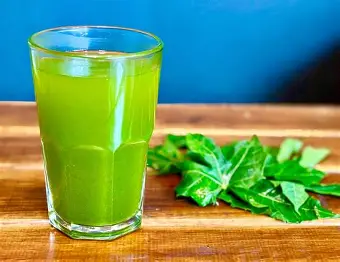
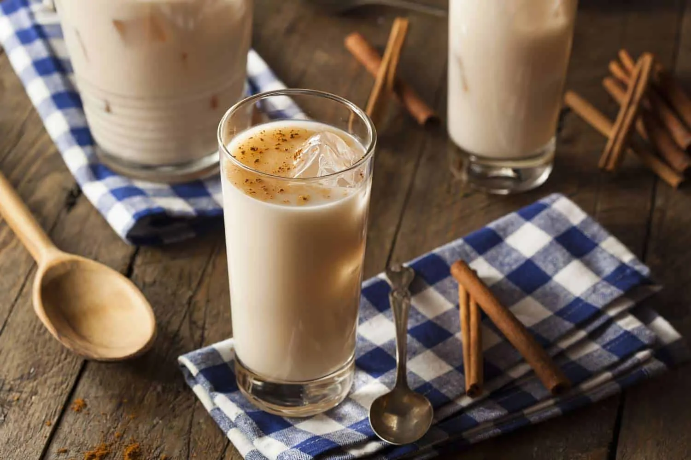
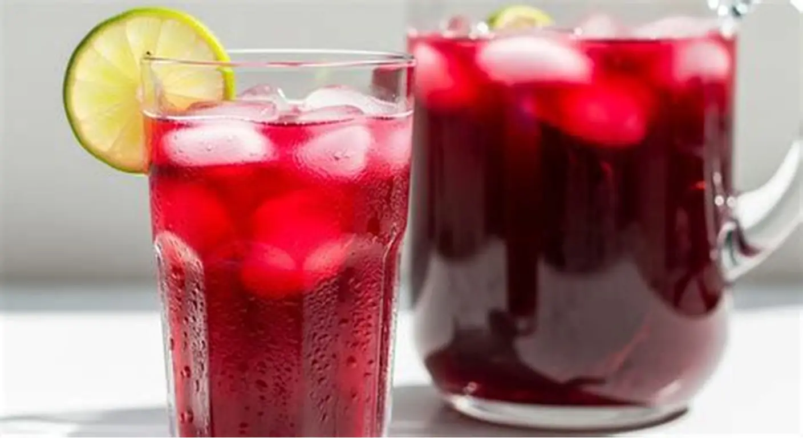

Jugo de Chaya

Bebida nutritiva hecha con hojas de chaya, rica en vitaminas.
- Hojas de chaya
- Agua
- Azúcar
Precio: $20 MXN
Refrescantes y naturales
Sabores tradicionales del sureste mexicano

Bebida nutritiva hecha con hojas de chaya, rica en vitaminas.
Precio: $20 MXN

Bebida dulce preparada con arroz, canela y azúcar.
Precio: $25 MXN

Bebida refrescante con un sabor ligeramente ácido.
Precio: $20 MXN
| Bebida | Sabor | Tipo |
|---|---|---|
| Chaya | Natural | Saludable |
| Horchata | Dulce | Energética |
| Jamaica | Ácida | Refrescante |